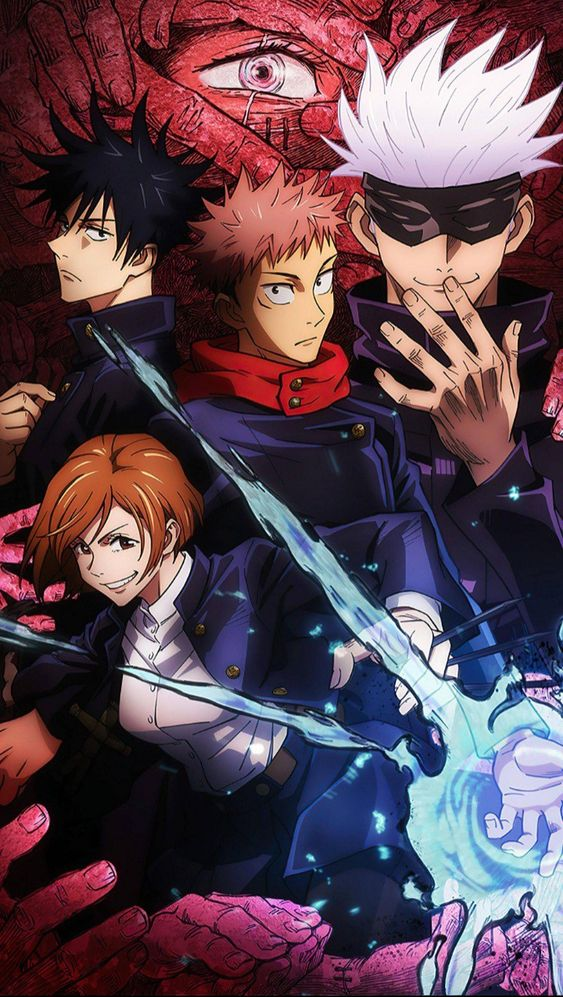

JUJUTSU KAISEN
Em Jujutsu Kaisen, a vida de um adolescente é virada de cabeça para baixo após entrar em contato com um talismã amaldiçoado. No conceituado anime, o adolescente Yuuji Itadori participa de um clube de ocultismo e acaba se envolvendo com um item perigoso, um dedo amaldiçoado. Para proteger seus colegas de um ataque das Maldições, ele engole o dedo e se torna anfitirão da Maldição. Ao invés de sofrer uma sentença de morte imediata, seu professor consegue levá-lo ao Colégio Técnico Metropolitano de Tóquio e elaborar um plano para que ele consuma todos os dedos para se tornar uma Maldição e, enfim, acabar com ela.